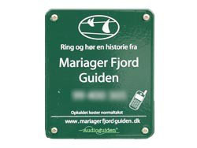

Den enkle løsning.....
Audioguiden er
et formidlings- og informationssystem, som er baseret på anvendelsen af
traditionel mobiltelefoni, men intergration med andre teknikker er også
en del af systemet.
Den grundlæggende funktion i alle vores løsninger er, at formidlere og udbydere af information kan tilbyde deres publikum, at de kan ringe op og høre en relevant fortælling.
Audioguiden er således det næstbedste i forhold til den personlige guide i naturen, i udstillingen, på museet eller på byvandringen.
I naturen og ved kulturminderne ude i landskabet, vil publikum typisk møde tilbudet om Audioguiden i form af et diskret skilt opsat på en pæl. Heraf fremgår det, at man, ved at ringe op til et nummer , kan få en fortælling om netop det man står ved.
Ved hjælp af tastetryk kan publikum navigere sig frem til yderligere information, og vælge avancerede funktioner til Audioguiden.
I udstillinger og museer kan man som et alternativ til skilte, blot opsætte mærkater med et telefonnummer, ved de steder i udstilligen, hvor man vil understøtte formidlingen med Audioguiden.
De avancerede løsninger.......
Alle løsninger serviceres centralt fra Audioguiden's telefonservere, hvorfor intergration med internet og sms for kunden er uproblematisk. Ligesom upload af lyd og konfigurering af Audioguiden via et Web-interface i en browser.
Vi kan også tilbyde specialtilpassede løsninger, hvis man f.eks. gerne vil have, at belysningen af landsbykirken skifter, når man om aftenen står og lytter til en fortælling om kirken…